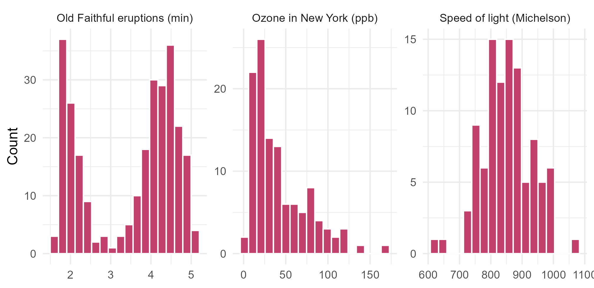
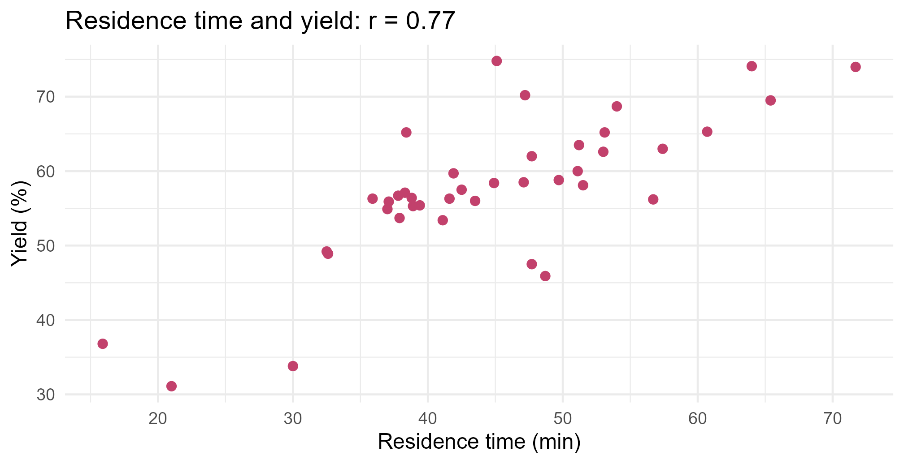

Module 0 · Lesson 7 of 14 Week 7 of 160 About 5–7 hours
Describing data
Center, spread, shape, unusual values and relationships
Summarize a distribution with the right measures of center and spread, find outliers, standardize with z-scores, and measure linear relationships with correlation.
Nobody can take in 40 batches’ worth of numbers at a glance, let alone 40,000. Descriptive statistics sum data up in a few well-chosen numbers: a typical value, how much the values vary, what shape they make. But a summary is only useful if it’s the right one. A single contaminated sample can make the average impurity look nearly three times worse than it really is. This lesson is about choosing the right summary, and knowing what it hides.
This is where statistics really begins! Everything from here on, from confidence intervals to machine learning, is built on the ideas in this lesson: center, spread and z-scores.
In this lesson you’ll:
- describe a distribution by its shape, center, spread and unusual values
- choose between the mean and the median
- measure spread with the IQR and the standard deviation
- find outliers, and compare values with z-scores
- summarize categories with proportions
- measure how strongly two variables move together
The examples use the reactor batches, loaded as batches <- read.csv("data/reactor_batches.csv").
Four things to describe
When you look at the distribution of a numerical variable, describe four things:
- Shape: is it symmetric or skewed? Does it have one peak or several?
- Center: what’s a typical value?
- Spread: how much do the values vary?
- Unusual values: are there outliers, gaps or clusters?
Here are three real distributions with very different shapes:
Show the code
shapes <- rbind(
data.frame(dataset = "Speed of light (Michelson)", value = morley$Speed),
data.frame(dataset = "Ozone in New York (ppb)", value = airquality$Ozone),
data.frame(dataset = "Old Faithful eruptions (min)", value = faithful$eruptions)
)
ggplot(shapes, aes(x = value)) +
geom_histogram(bins = 18, fill = "#C2416C", color = "white", na.rm = TRUE) +
facet_wrap(~ dataset, scales = "free") +
labs(x = NULL, y = "Count") +
theme_minimal(base_size = 12)
Michelson’s 100 measurements of the speed of light, from 1879, are roughly symmetric, with a single peak in the middle. That’s what measurement error usually looks like. The ozone levels are right-skewed: most days are clean, with a long tail of high-pollution days. Old Faithful’s eruptions are bimodal: there are two kinds of eruption, short and long. A single “typical value” describes that last one badly.
The middle: mean and median
You’ve met both already. The mean, \bar{x} = \frac{1}{n}\sum x_i, is the balance point of the data. The median is the middle value once the data is sorted, or the average of the two middle values when n is even.
They can tell very different stories. Ten samples from a product tank were analyzed for an impurity, in parts per million (ppm). One of them was taken in a contaminated bottle:
impurity_ppm <- c(42, 45, 47, 48, 51, 53, 55, 58, 62, 950)
mean(impurity_ppm)
#> [1] 141.1
median(impurity_ppm)
#> [1] 52The mean, 141 ppm, is higher than nine of the ten samples! One extreme value drags the mean toward it, while the median barely notices. Statisticians say the median is robust to outliers.
So which should you use?
- For a roughly symmetric distribution without outliers, the mean and median are close, and the mean is the usual choice.
- For a skewed distribution, or one with outliers, the median usually describes a typical value better. That’s why news reports give median house prices and incomes.
- A mean well above the median hints at right skew. A mean well below it hints at left skew.
A compromise is the trimmed mean, which drops a fraction of the values at each end before averaging:
mean(impurity_ppm, trim = 0.1) # drop the lowest and highest 10%
#> [1] 52.375For a categorical variable, the natural “center” is the mode, the most common category. (You wrote a function for it in Lesson 4.)
NoteGo deeper: the mean and median as best guesses
Say you must sum up the data with a single number c, and you’re penalized by the squared distance to every data point. The total penalty is f(c) = \sum_{i=1}^n (x_i - c)^2. To minimize it, set the derivative to zero:
f'(c) = -2 \sum_{i=1}^n (x_i - c) = 0 \quad\Longrightarrow\quad nc = \sum_{i=1}^n x_i \quad\Longrightarrow\quad c = \bar{x} .
Since f''(c) = 2n > 0, that’s a minimum: the mean minimizes the sum of squared deviations. If the penalty is the absolute distance instead, g(c) = \sum |x_i - c|, the best c is the median: moving c toward the middle shortens the distance to more points than it lengthens. R’s optimize() can check both numerically:
optimize(function(c) sum((impurity_ppm - c)^2), range(impurity_ppm))$minimum
#> [1] 141.1
optimize(function(c) sum(abs(impurity_ppm - c)), range(impurity_ppm))$minimum
#> [1] 51.9683The first gives the mean, 141.1. Any value between 51 and 53 minimizes the second, and the median, 52, is in that range. Least squares, the idea behind the mean, is the foundation of regression in Module 2.
Your turn. How much bigger is the mean impurity than the median? Return the mean minus the median.
mean(impurity_ppm) - median(impurity_ppm)
impurity_ppm <- c(42, 45, 47, 48, 51, 53, 55, 58, 62, 950)
mean(impurity_ppm) - median(impurity_ppm)Spread: how much do values vary?
Two catalysts can give the same average yield, but one can be far more consistent than the other. Spread matters just as much as the center.
The range is the maximum minus the minimum. It’s simple, but it depends on just two values, the most extreme ones:
range(impurity_ppm)
#> [1] 42 950
diff(range(impurity_ppm))
#> [1] 908Quartiles split the sorted data into four equal parts. The first quartile Q_1 has 25% of the data below it, the median is the second quartile, and the third quartile Q_3 has 75% below it. The interquartile range, \text{IQR} = Q_3 - Q_1, is the width of the middle half of the data, and like the median it’s robust:
quantile(impurity_ppm, c(0.25, 0.5, 0.75))
#> 25% 50% 75%
#> 47.25 52.00 57.25
IQR(impurity_ppm)
#> [1] 10(There are several slightly different ways to compute quartiles, so other software may give slightly different numbers. Nothing to worry about.)
The variance and standard deviation use every value. The sample variance is the average squared deviation from the mean, except that it divides by n - 1:
s^2 = \frac{1}{n-1}\sum_{i=1}^{n} (x_i - \bar{x})^2, \qquad s = \sqrt{s^2} .
The standard deviation s is in the same units as the data, and you can think of it as a typical distance between a value and the mean. Here it is step by step, for eight readings of a pressure gauge, in bar:
gauge <- c(4.2, 4.4, 4.4, 4.4, 4.5, 4.5, 4.7, 4.9)
deviation <- gauge - mean(gauge)
data.frame(gauge, deviation, squared = deviation^2)
#> gauge deviation squared
#> 1 4.2 -0.3 0.09
#> 2 4.4 -0.1 0.01
#> 3 4.4 -0.1 0.01
#> 4 4.4 -0.1 0.01
#> 5 4.5 0.0 0.00
#> 6 4.5 0.0 0.00
#> 7 4.7 0.2 0.04
#> 8 4.9 0.4 0.16
sum(deviation^2) / (length(gauge) - 1)
#> [1] 0.04571429
var(gauge)
#> [1] 0.04571429
sd(gauge)
#> [1] 0.213809So the gauge readings typically sit about 0.2 bar from their mean of 4.5 bar. Like the mean, the standard deviation is sensitive to outliers. The contaminated sample makes it enormous:
sd(impurity_ppm)
#> [1] 284.2833
sd(impurity_ppm[impurity_ppm < 900])
#> [1] 6.437736summary() gives the five-number summary (the minimum, quartiles, median and maximum) plus the mean. It’s exactly what a boxplot draws:
summary(batches$yield_pct)
#> Min. 1st Qu. Median Mean 3rd Qu. Max.
#> 31.10 55.20 57.30 57.65 63.12 74.80
NoteGo deeper: why divide by n − 1?
We want s^2 to estimate the variance \sigma^2 of the whole population the data came from: the average squared distance from the population mean \mu. But we don’t know \mu, so we measure the distances from \bar{x} instead. From the previous Go deeper box, \bar{x} is the number that makes the sum of squared deviations as small as possible, so \sum (x_i - \bar{x})^2 always comes out a little smaller than \sum (x_i - \mu)^2. Dividing by n - 1 instead of n exactly makes up for that, on average. You can prove that E[s^2] = \sigma^2, so we say the estimator is unbiased.
Another way to see it: the deviations always add up to zero (Lesson 2), so once you know n - 1 of them, the last one is fixed. Only n - 1 of them are free to vary, so we say the estimate has n - 1 degrees of freedom.
A simulation shows the bias. Draw 10,000 samples of size 5 from a population with variance 1, and average the two versions of the variance:
set.seed(1)
divide_by_n_minus_1 <- replicate(10000, var(rnorm(5)))
divide_by_n <- divide_by_n_minus_1 * 4 / 5
c(n_minus_1 = mean(divide_by_n_minus_1), n = mean(divide_by_n))
#> n_minus_1 n
#> 1.0132708 0.8106166Dividing by n - 1 averages close to the true value of 1. Dividing by n comes out about 20% too low. You’ll meet rnorm() and replicate() properly in Lessons 8 to 11.
Your turn. Find the first quartile, the median and the third quartile of the nitric acid plant’s stack loss, stackloss$stack.loss.
quantile() takes the data and a vector of probabilities: c(0.25, 0.5, 0.75).
quantile(stackloss$stack.loss, c(0.25, 0.5, 0.75))Your turn. Five replicate measurements of a standard solution gave these concentrations, in mg/L. Compute their standard deviation from the formula, without sd() or var().
Take the square root of: the sum of the squared deviations from the mean, divided by n - 1.
x <- c(12, 15, 11, 18, 14)
sqrt(sum((x - mean(x))^2) / (length(x) - 1))The mean is 14, the squared deviations add up to 30, and \sqrt{30/4} \approx 2.74 mg/L.
Unusual values
An outlier is a value far from the rest. The most common rule for flagging them is the 1.5 × IQR rule: anything below Q_1 - 1.5 \times \text{IQR} or above Q_3 + 1.5 \times \text{IQR} is flagged. It’s the rule boxplots use to draw separate points. Let’s try it on the yields:
q1 <- quantile(batches$yield_pct, 0.25)
q3 <- quantile(batches$yield_pct, 0.75)
fences <- c(lower = q1 - 1.5 * IQR(batches$yield_pct),
upper = q3 + 1.5 * IQR(batches$yield_pct))
fences
#> lower.25% upper.75%
#> 43.3125 75.0125
batches[batches$yield_pct < fences["lower"], c("batch_id", "alarms", "residence_min", "yield_pct")]
#> batch_id alarms residence_min yield_pct
#> NA <NA> NA NA NA
#> NA.1 <NA> NA NA NA
#> NA.2 <NA> NA NA NA
#> NA.3 <NA> NA NA NA
#> NA.4 <NA> NA NA NA
#> NA.5 <NA> NA NA NA
#> NA.6 <NA> NA NA NA
#> NA.7 <NA> NA NA NA
#> NA.8 <NA> NA NA NA
#> NA.9 <NA> NA NA NA
#> NA.10 <NA> NA NA NA
#> NA.11 <NA> NA NA NA
#> NA.12 <NA> NA NA NA
#> NA.13 <NA> NA NA NA
#> NA.14 <NA> NA NA NA
#> NA.15 <NA> NA NA NA
#> NA.16 <NA> NA NA NA
#> NA.17 <NA> NA NA NA
#> NA.18 <NA> NA NA NA
#> NA.19 <NA> NA NA NA
#> NA.20 <NA> NA NA NA
#> NA.21 <NA> NA NA NA
#> NA.22 <NA> NA NA NA
#> NA.23 <NA> NA NA NA
#> NA.24 <NA> NA NA NA
#> NA.25 <NA> NA NA NA
#> NA.26 <NA> NA NA NA
#> NA.27 <NA> NA NA NA
#> NA.28 <NA> NA NA NA
#> NA.29 <NA> NA NA NA
#> NA.30 <NA> NA NA NA
#> NA.31 <NA> NA NA NA
#> NA.32 <NA> NA NA NA
#> NA.33 <NA> NA NA NA
#> NA.34 <NA> NA NA NA
#> NA.35 <NA> NA NA NA
#> NA.36 <NA> NA NA NA
#> NA.37 <NA> NA NA NA
#> NA.38 <NA> NA NA NA
#> NA.39 <NA> NA NA NAThree batches are flagged, all on the low side. B10, for example, had 3 alarms and spent only 21 minutes in the reactor.
Flagging an outlier is the start of a question, not the end. Is it a typo, like a yield of 573% where someone missed the decimal point? A real but special case, like the contaminated bottle? Or simply a rare but legitimate value? Never delete a value just because it’s inconvenient. Those three poor batches are exactly the ones a process engineer would want to investigate!
Your turn. Using the 1.5 × IQR rule, how many batches have an unusually low purity? (batches is already loaded.)
The lower fence is Q_1 - 1.5 \times \text{IQR}, and the IQR is q3 - q1.
p <- batches$purity_pct
q1 <- quantile(p, 0.25)
q3 <- quantile(p, 0.75)
lower <- q1 - 1.5 * (q3 - q1)
sum(p < lower)z-scores: how unusual is it?
A z-score says how many standard deviations a value sits above or below the mean:
z = \frac{x - \bar{x}}{s} .
z-scores let you compare values measured on completely different scales. Batch B10 had a poor yield and a poor purity. Which was more unusual? Its raw numbers can’t say, but its z-scores can:
b10 <- batches[batches$batch_id == "B10", ]
z_yield <- (b10$yield_pct - mean(batches$yield_pct)) / sd(batches$yield_pct)
z_purity <- (b10$purity_pct - mean(batches$purity_pct)) / sd(batches$purity_pct)
round(c(yield = z_yield, purity = z_purity), 2)
#> yield purity
#> -2.72 -2.20Its yield was 2.7 standard deviations below average, and its purity 2.2 below: both unusual, but the yield more so. Standardizing every value of a variable gives z-scores with mean 0 and standard deviation 1. R’s scale() does it in one step: as.numeric(scale(x)).
For bell-shaped distributions, about 68% of the values lie within 1 standard deviation of the mean, about 95% within 2, and about 99.7% within 3. This is the empirical rule, and Lesson 10 explains where it comes from. Michelson’s speed-of-light measurements are roughly bell-shaped, so let’s check:
z <- (morley$Speed - mean(morley$Speed)) / sd(morley$Speed)
c(within_1 = mean(abs(z) < 1), within_2 = mean(abs(z) < 2), within_3 = mean(abs(z) < 3))
#> within_1 within_2 within_3
#> 0.67 0.97 1.00Very close to 68%, 95% and 99.7%. For skewed data, like the ozone levels, the rule doesn’t apply.
Your turn. What’s the z-score of the best yield in the batches?
z = (x - \bar{x}) / s, with x = max(batches$yield_pct).
(max(batches$yield_pct) - mean(batches$yield_pct)) / sd(batches$yield_pct)Categories: counts and proportions
For a categorical variable, the summary is a table of counts, or better, of proportions:
table(batches$catalyst)
#>
#> A B C D
#> 10 12 9 9
prop.table(table(batches$catalyst))
#>
#> A B C D
#> 0.250 0.300 0.225 0.225
round(100 * prop.table(table(batches$catalyst)), 1)
#>
#> A B C D
#> 25.0 30.0 22.5 22.5For two categorical variables, conditional proportions answer questions like “what fraction of each shift’s batches were on spec?” Setting margin = 1 makes each row add up to 1:
shift_spec <- table(shift = batches$shift, on_spec = batches$on_spec)
shift_spec
#> on_spec
#> shift FALSE TRUE
#> day 6 16
#> night 3 15
round(prop.table(shift_spec, margin = 1), 3)
#> on_spec
#> shift FALSE TRUE
#> day 0.273 0.727
#> night 0.167 0.833On the day shift, 72.7% of batches were on spec, and on the night shift 83.3%. Lesson 8 calls these conditional probabilities.
Your turn. Make the table of catalyst by on_spec, and turn it into row proportions, so that each catalyst’s row adds up to 1.
prop.table() has a margin argument: 1 for rows, 2 for columns.
tab <- table(batches$catalyst, batches$on_spec)
prop.table(tab, margin = 1)Relationships: correlation
For two numerical variables, start with a scatterplot. Then the correlation coefficient r measures how close the points lie to a straight line:
r = \frac{1}{n-1}\sum_{i=1}^{n} \left(\frac{x_i - \bar{x}}{s_x}\right)\left(\frac{y_i - \bar{y}}{s_y}\right) .
It’s the average product of the two variables’ z-scores. When high values of x go with high values of y, both z-scores tend to have the same sign, so the products are positive and r is positive.
cor(batches$residence_min, batches$yield_pct)
#> [1] 0.7716611
cor(batches$temp_C, batches$purity_pct, use = "complete.obs")
#> [1] -0.7217229use = "complete.obs" tells cor() to leave out the pairs with a missing value. Longer residence goes with higher yield (r = 0.77), and higher temperature goes with lower purity (r = -0.72). The correlations of several variables at once form a correlation matrix:
round(cor(batches[, c("temp_C", "residence_min", "alarms", "yield_pct", "purity_pct")],
use = "pairwise.complete.obs"), 2)
#> temp_C residence_min alarms yield_pct purity_pct
#> temp_C 1.00 0.12 -0.22 0.20 -0.72
#> residence_min 0.12 1.00 -0.34 0.77 0.08
#> alarms -0.22 -0.34 1.00 -0.41 -0.19
#> yield_pct 0.20 0.77 -0.41 1.00 0.09
#> purity_pct -0.72 0.08 -0.19 0.09 1.00ggplot(batches, aes(x = residence_min, y = yield_pct)) +
geom_point(color = "#C2416C", size = 2) +
labs(title = "Residence time and yield: r = 0.77",
x = "Residence time (min)", y = "Yield (%)") +
theme_minimal(base_size = 12)
What to remember about r:
- It’s always between −1 and 1. The sign gives the direction, and values near −1 or 1 mean the points lie close to a line.
- It has no units, and changing units (°C to °F, say) doesn’t change it.
- It’s the same whichever variable you call x.
- It only measures straight-line relationships. A perfect curve can have r = 0:
x <- -5:5
cor(x, x^2)
#> [1] 0- It’s sensitive to outliers, as Anscombe’s quartet showed. Always look at the scatterplot.
- Correlation is not causation. Batches with more alarms have lower yields (r = -0.41). Do the alarms cause the low yields? Not necessarily: a third factor, like a fouled heat exchanger or a bad lot of raw material, could cause both. A third variable that drives two others is called a confounder. Module 2 comes back to this.
Your turn. Compute the correlation between alarms and yield_pct. One batch is missing its alarm count.
cor() has no na.rm. Its argument for missing values is use = "complete.obs".
cor(batches$alarms, batches$yield_pct, use = "complete.obs")Your turn. Compute the correlation between pressure_bar and yield_pct. Does pressure matter much for the yield?
cor(x, y) with the two columns. Neither one has missing values.
cor(batches$pressure_bar, batches$yield_pct)About −0.15: a very weak relationship. Within the range this plant runs, pressure hardly seems to matter.
Challenge round
Challenge 1 · Correlation by hand. Compute the correlation between the air flow and the stack loss of the nitric acid plant from the formula: the sum of the products of the z-scores, divided by n - 1. Don’t use cor().
zx <- (x - mean(x)) / sd(x), and the same for zy.
The last line is sum(zx * zy) / (length(x) - 1).
x <- stackloss$Air.Flow
y <- stackloss$stack.loss
zx <- (x - mean(x)) / sd(x)
zy <- (y - mean(y)) / sd(y)
sum(zx * zy) / (length(x) - 1)About 0.92: the harder the plant runs, the more ammonia it loses. Check it with cor(x, y).
Challenge 2 · An outlier detector. Write a function flag_outliers() that returns the values of x outside the 1.5 × IQR fences, on either side. Test it on the yields.
Use logical indexing: keep the values of x where x < q1 - 1.5 * iqr or x > q3 + 1.5 * iqr. “Or” is |.
flag_outliers <- function(x) {
q1 <- quantile(x, 0.25)
q3 <- quantile(x, 0.75)
iqr <- q3 - q1
x[x < q1 - 1.5 * iqr | x > q3 + 1.5 * iqr]
}
flag_outliers(batches$yield_pct)The three poor batches: 31.1%, 33.8% and 36.8%. Try it on batches$purity_pct and batches$residence_min too.
Quick quiz
1. Impurity levels in a product are strongly right-skewed. Which is the better summary of a typical level?
In a right-skewed distribution, the long tail pulls the mean above the typical value. The median is robust.
2. A distribution’s mean is much larger than its median. What does that suggest?
Large values in the tail pull the mean up, but barely move the median.
3. Which measure of spread is least affected by one extreme value?
The IQR depends only on the middle half of the data, so a single extreme value can’t move it much.
4. A batch’s yield has a z-score of −1.5. What does that mean?
A z-score counts standard deviations from the mean, and its sign gives the direction.
5. The correlation between two variables is 0. Which statement is true?
r only measures straight-line relationships. y = x^2 for x from −5 to 5 has r = 0.
6. Plants that spend more on maintenance have more equipment failures. Should they cut maintenance to reduce failures?
Correlation isn’t causation. A third variable, here the plant’s age, can drive both.
Wrap-up
You can describe any dataset now. Here’s what you’ve learned:
- Four things to describe: shape, center, spread and unusual values.
- Center: the mean is the balance point; the median is the middle value, and it’s robust to outliers and skew.
- Spread: the standard deviation is a typical distance from the mean (computed with n - 1); the IQR spans the middle half and is robust.
- Unusual values: the 1.5 × IQR rule and z-scores flag them. Investigate them; don’t just delete them.
- z-scores count standard deviations from the mean. For bell-shaped data, about 68%, 95% and 99.7% of values are within 1, 2 and 3 of them.
- Categories: use proportions, and conditional proportions for two variables.
- Correlation measures straight-line relationships. It ignores curves, is sensitive to outliers, and doesn’t prove causation.
TipPractice in RStudio (optional, about an hour)
Write a short descriptive report on the batches in week07.R, using dplyr where it helps.
- Shape. Make a histogram of each numerical variable. Describe each one in a comment: symmetric or skewed, one peak or more?
- Center and spread by group. Build a table with one row per catalyst giving
n, the mean, median, standard deviation and IQR of the yield. Which catalyst varies most? - Outliers. Which variables have outliers by the 1.5 × IQR rule? Check your answers with
boxplot.stats(x)$out. (It computes quartiles a slightly different way, so tiny differences are fine.) - Empirical rule. Standardize
residence_minwithscale(). What proportion of batches are within 1 and 2 standard deviations of the mean? - Correlations. Compute the correlation matrix of the numerical columns, and draw a scatterplot of the strongest pair. Then run
pairs(batches[, c("temp_C", "residence_min", "yield_pct", "purity_pct")])to see all the scatterplots at once. - In a few sentences, describe a “typical” batch to someone who’s never seen the data.
NoteKey words from this lesson
- Descriptive statistics
- Numbers and charts that summarize data, as opposed to drawing conclusions about a wider population.
- Skewness
- Asymmetry in a distribution. Right-skewed data have a long tail of large values.
- Robust
- Not much affected by outliers or skew. The median and IQR are robust; the mean and SD are not.
- Quartiles and IQR
- The values that split sorted data into four equal parts. The IQR is the third quartile minus the first.
- Variance and standard deviation
- The average squared deviation from the mean (dividing by n - 1), and its square root.
- Outlier
- A value far from the rest of the data.
- z-score
- The number of standard deviations a value lies above or below the mean.
- Correlation coefficient
- A number between −1 and 1 that measures the strength and direction of a straight-line relationship.
- Confounder
- A third variable that affects both variables in an association, creating a correlation without a direct causal link.
NoteWant to read more?
- Introduction to Modern Statistics, “Exploring numerical data” and “Exploring categorical data”. The same ideas, with lots of real examples and practice problems.